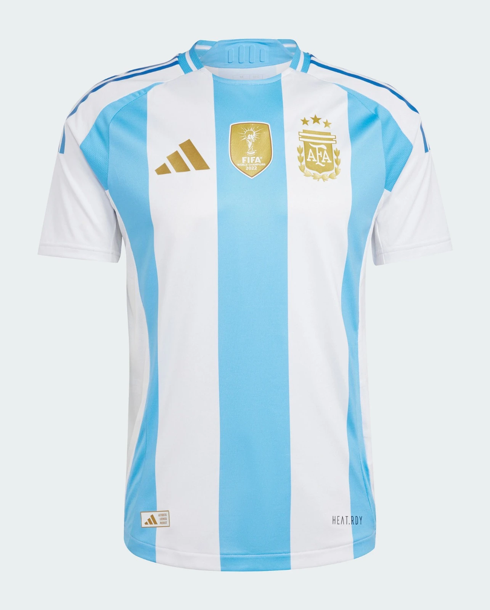

1. The Hand of God
June 22, 1986, Estadio Azteca—114,600 fans pack Mexico City’s cauldron for Argentina vs. England, a quarter-final steeped in Falklands War scars, four years raw. It’s 0-0, 51st minute—Argentina’s Jorge Valdano mis-hits a looping ball into England’s box. Diego Maradona, 5’5” of fire, chases it, leaping against 6’1” keeper Peter Shilton. What happens next is football’s most infamous twist: Maradona punches the ball with his left fist, over Shilton’s outstretched hands, into the net. 1-0.
Tunisian ref Ali Bin Nasser misses it—England’s bench erupts, Terry Butcher and Glenn Hoddle screaming, but the goal stands. Maradona jogs back, smirking, glancing at teammates—later dubbing it “the Hand of God.” English fans boo; Argentina’s roar. “I didn’t touch it,” Diego lies post-match, grinning, “it was all God’s doing.” Shilton fumes, “A clear foul—he cheated!” The stadium buzzes—114,600 witnesses to a scandal that’s pure Maradona: cunning, audacious, unapologetic.
It’s not just a goal—it’s a statement. Four years after the Falklands, it’s Argentina’s jab—political, personal, raw. Clips flood TV screens—Maradona’s fist, Shilton’s dive, the net rippling—sparking debates that rage decades on. “A little with the head, a little with the hand,” he admits years later, laughing. England’s defense tightens, but the damage is done—1-0 becomes a psychological gut punch. Four minutes later, he’ll strike again, but this is the moment that ignites 1986—a cheat’s masterstroke, forever etched in lore.
For Argentina, it’s the spark; for football, it’s legend. The Hand of God isn’t skill—it’s Diego’s soul: street-smart, defiant, brilliant. Butcher calls it “disgraceful”; fans call it genius. It’s both—800 replays can’t dull its edge. A quarter-final turns into a war, and Maradona, with one fist, wins the first battle.

2. Goal of the Century
Same match, same stage—June 22, Azteca, 54th minute. Argentina lead 1-0 via the Hand of God, England reeling. Maradona picks up the ball 10 yards inside his own half, near the right touchline—Héctor Enrique’s pass is simple, but what follows is immortal. Diego turns, flicks it forward, and runs—60 yards, 10.8 seconds, five England players left sprawling. Peter Beardsley lunges—misses. Peter Reid chases—too slow. Terry Fenwick stumbles—brushed aside.
Maradona weaves—left, right, a blur in blue and white stripes—Terry Butcher dives, grasping air. At the box’s edge, Peter Shilton rushes out—Diego feints left, drags right, slots it home with his left foot, 2-0. The stadium erupts—114,600 fans screaming, a roar that shakes Mexico. BBC’s Barry Davies yells, “You have to say that’s magnificent!” England’s defense, shredded, stares in disbelief—Butcher mutters, “He’s a genius, isn’t he?”
It’s not just a goal—it’s football’s Sistine Chapel ceiling. From his own half, through half a team, in a quarter-final—Maradona turns a match into a myth. “I felt the earth move,” he says later; fans felt it too—clips rack up billions of views, dubbed “Goal of the Century” by FIFA in 2002. England rally—Gary Lineker pulls one back, 2-1—but Diego’s dagger holds. Coach Carlos Bilardo calls it “a miracle”; Shilton admits, “No one could’ve stopped him.”
It’s Maradona at his peak—25, unstoppable, carrying Argentina toward glory. The run’s replayed endlessly—each jink, each dodge a brushstroke of brilliance. For fans, it’s the moment football became art; for England, it’s the knockout blow after the Hand. Two goals, four minutes apart—one a cheat, one a god—seal a 2-1 win and Argentina’s path to the title. Pure Diego, pure 1986.
3. Maradona’s Final Masterpiece
June 29, 1986, Estadio Azteca—final day, 114,600 fans again, Argentina vs. West Germany, 2-2, 83rd minute. Maradona’s already dazzled—his free-kick led to Jorge Brown’s opener, his presence unnerved Germany all game. But with the score tied—Karl-Heinz Rummenigge and Rudi Völler clawing Germany back—it’s Diego time. He picks up the ball near midfield, 35 yards out, surrounded by white shirts—Harald Schumacher’s goal beckons.
Maradona dances—two touches, a spin—Pierre Littbarski lunges, misses. He spots Jorge Burruchaga breaking right, unmarked—Diego lofts a perfect pass over Germany’s defense, splitting Hans-Peter Briegel and Norbert Eder. Burruchaga latches on, races through, slots it past Schumacher—3-2. The crowd explodes—Mexico City shakes; Argentina’s bench leaps. “That pass was everything,” Burruchaga says later; Bilardo screams, “He’s a god!” Germany’s Franz Beckenbauer, coaching, slumps—“Maradona decided it.”
It’s not the flashiest goal—Burruchaga finishes—but it’s Maradona’s brain, his vision, that wins the World Cup. After 90 minutes of battle—José Luis Cuciuffo’s 2-0 header, Germany’s fightback—this is the dagger. Argentina hold on, 3-2, lifting the trophy—Diego’s tournament, seven goals involved (five scored, two assisted). “I saw the gap and hit it,” he shrugs post-match, but it’s more: a captain’s clutch moment, threading the needle when it mattered most.
Fans rewatch it—clips show Diego’s calm amid chaos, Burruchaga’s run, the net bulging. It’s 1986’s climax—Maradona, battered by fouls all tournament, delivers the title. “He carried us,” Valdano says; Germany’s Lothar Matthäus nods, “Unstoppable.” For Argentina, it’s redemption—post-Falklands glory; for football, it’s Diego’s coronation. A pass that echoes louder than goals.
4. England’s Lineker Strikes Back
Back to June 22, Azteca—Argentina vs. England, 2-0 down after Maradona’s double whammy: Hand of God, Goal of the Century. It’s the 81st minute—England’s hopes hang by a thread, 114,600 fans sensing a rout. Then Gary Lineker, 25, Golden Boot-bound, ignites. John Barnes, subbed on, dances down the left—his cross curls perfectly to the back post. Lineker rises, outmuscles Cuciuffo, heads it past Nery Pumpido—2-1.
The English fans roar—hope flickers in Mexico’s heat. Lineker’s sixth goal of the tournament, topscorer locked—Bobby Robson’s bench leaps, “We’re back in it!” Argentina wobble—Barnes crosses again minutes later, Lineker inches from an equalizer, Pumpido scrambling. “I thought we’d turn it,” Lineker says later; Maradona admits, “They scared us.” England press—Steve Hodge, Peter Reid relentless—but time runs out, 2-1 holds.
It’s not the win—it’s the fight. Lineker’s header is England’s defiance after Diego’s magic, a striker’s instinct in a lost cause. “We gave everything,” Butcher recalls; Argentina’s Sergio Batista nods, “He was dangerous.” Clips show Barnes’ whip, Lineker’s leap—six goals in five games, a one-man rally. “If we’d had five more minutes…” Lineker muses. England exit, but this strike burns—proof they didn’t roll over.
For fans, it’s 1986’s underdog spark—Lineker’s Golden Boot (six goals) shines despite defeat. “He was our lion,” Robson says; Maradona respects it—“A great player.” Amid Diego’s miracles, Lineker’s late dagger keeps England’s pride alive—a header that echoes through a tournament Argentina owned.